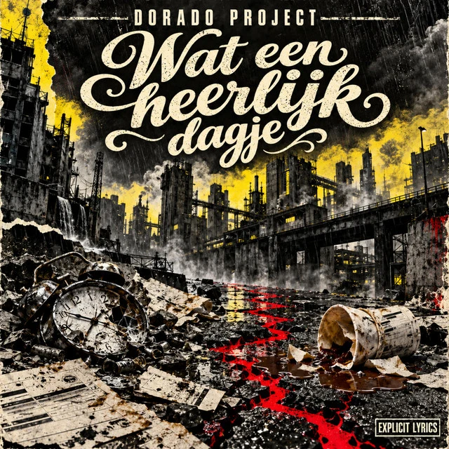

SINGLE · OP SPOTIFY · EXPLICIT
Wat een heerlijk dagje
Nederlandstalige rock / Satire
Een Nederlandstalig scheldnummer met een bedrieglijk keurige titel. Een ongefilterde uitlaatklep vol grove taal, zwarte humor en opgekropte frustratie. Explicit lyrics.
Luister op Spotify →